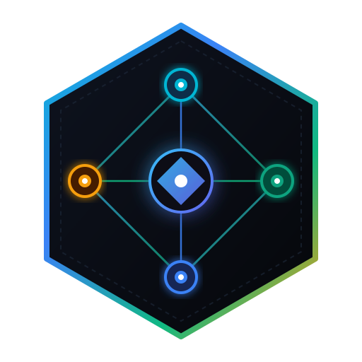

The codebase enforces strict unit, integration, and security verification. All test suites run locally with zero cloud dependence:
| Test Suite | Coverage Focus | Assertions | Status |
|---|---|---|---|
tests/autonomous.loop.test.mjs |
Closed-loop consensus, failing test rejections, iteration limits | 15 tests | PASSED |
tests/consensus.pipeline.test.mjs |
Multi-provider turn routing, quorum enforcement, schema recovery | 12 tests | PASSED |
tests/execution.engine.test.mjs |
Security policy, directory traversal blocks, command whitelisting | 10 tests | PASSED |
tests/remediation.test.mjs |
Windows space-path handling, watchdog process termination | 14 tests | PASSED |
tests/provider.agnostic.test.mjs |
Dynamic provider rotation, fallback failover, solo-model modes | 13 tests | PASSED |
tests/chatgpt.submission.test.mjs |
CDP resilient selector probing, Cloudflare/rate-limit detection | 12 tests | PASSED |
tests/smoke.test.mjs |
IPC contract definitions, Electron partition isolation | 14 tests | PASSED |
npm test outputs and terminal logs.